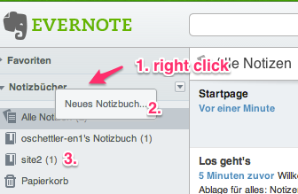
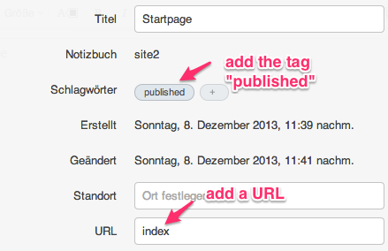
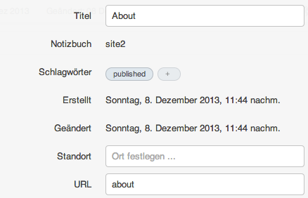
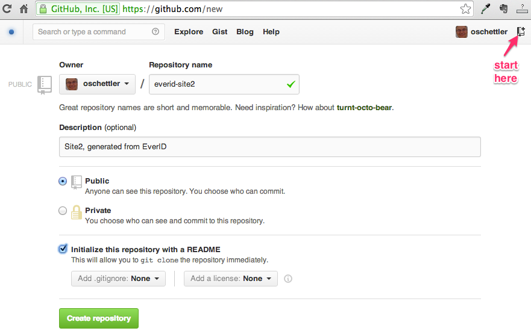
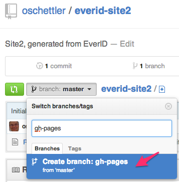
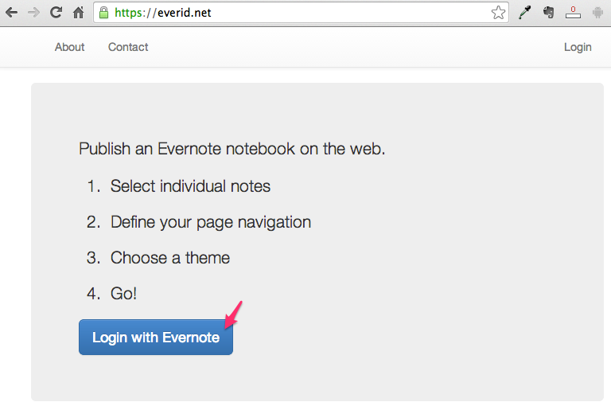
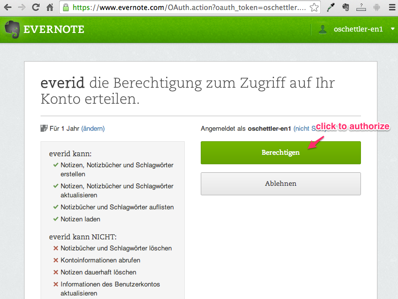

Create a new notebook:

Create some notes in this notebook:


Now, prepare your target site. Login to your Github account and create a repository:

For now, you also have to create a branch „gh-pages“ manually:

Now, go to https://everid.net

Click on „Login with Evernote“. You are redirected to evernote

Click to get redirected to a configuration editor at everid.net:
Enter the pieces of information as shown above.
You need to change anything in the attributes for the configuration to be saved. This is, of course, a bug. For example, change the name to „My little Site"
The following is still a bit experimental. To connect with Github, go to
https://everid.net/github/login
Finally, to create your Github pages, go to
https://everid.net/user/update
This will log its progress:
Updating "site2"...
Creating _drafts
Creating _includes
Creating _layouts
Creating _posts
Creating _data
Creating _site
Theme "bootstrap"
Styles
Writing _config.yml
Writing _data/navigation.yml
About ... (about.html) updated: -6218
Startpage ... (index.html) updated: -6190
For this example, Github has created your site at
It will very easy to have your own domain point to this site. This will be in one of my next updates.